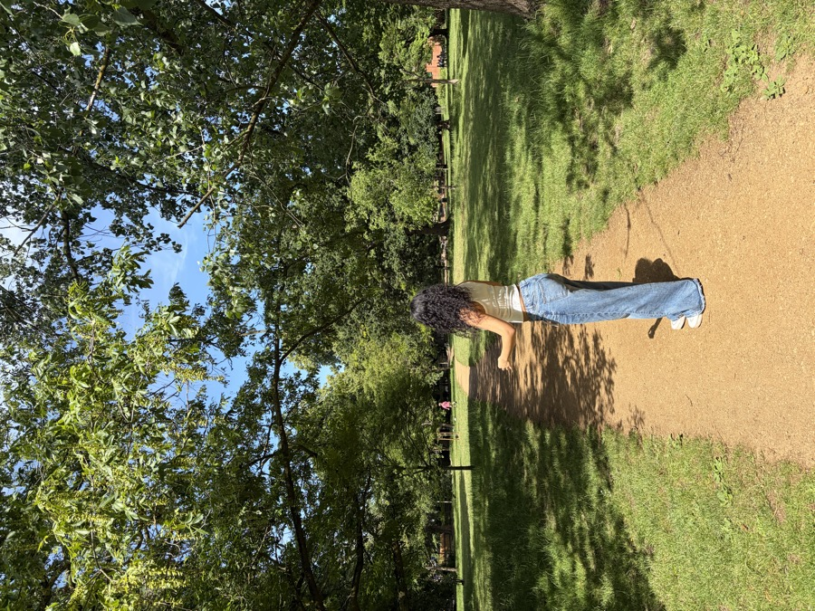

// my corner of the internet
cs student, researcher, builder — documenting the journey one post at a time.
second-year cs student, researcher, and occasional writer — trying to figure things out and document it honestly.

ayushi ✦ 2026
i'm a second-year B.E. Computer Science student at Thapar Institute of Engineering & Technology, maintaining a 9.23 CGPA while doing research, building software, and trying not to lose my mind in the process.
right now i'm conducting NLP/ML research under a professor's guidance — still in the thick of it, learning what it actually means to do research as an undergrad.
i've built production software that real students at Thapar use, led design workshops, and i'm also a published fiction author. i like making things and putting them out into the world.
this site is where i put the things i've built and the research i'm doing — for the unfiltered, less-polished version, that's on substack.
a selection of projects, from class assignments to things people actually use. click a card for the full story.